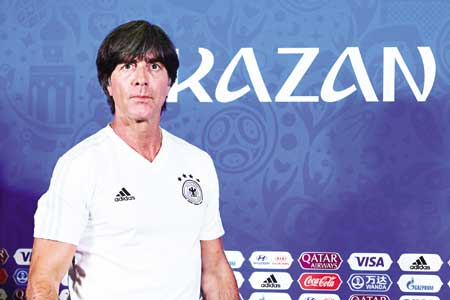
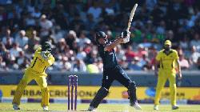
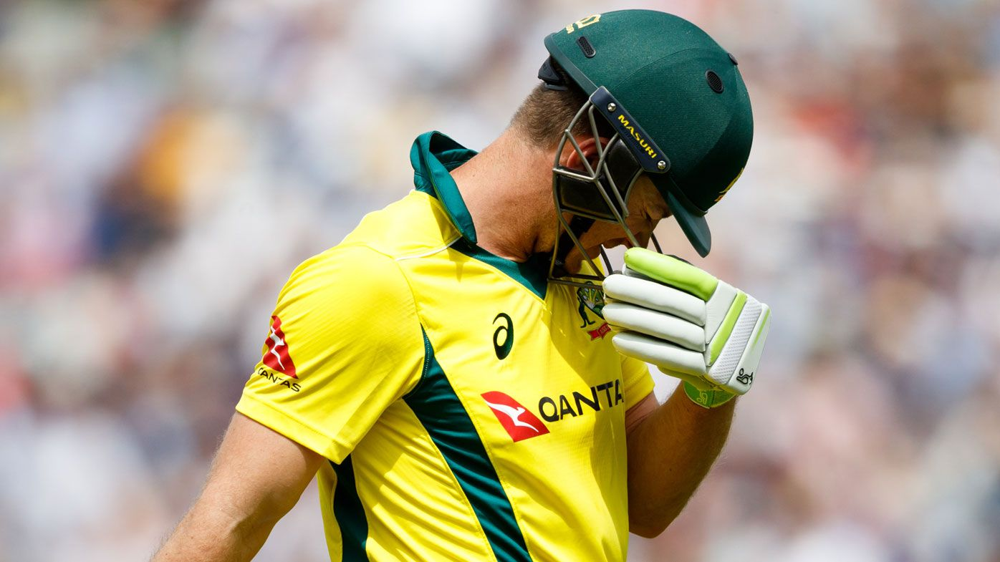
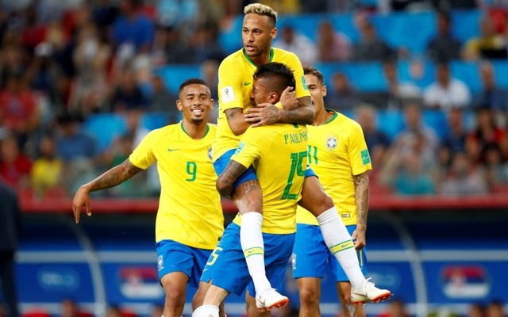

Ronando

Ronaldo lives for Champions League final stage: Zidane Published : Real Madrid's Portuguese forward Cristiano Ronaldo kicks the ball during a team's training session at the Olympic Stadium in Kiev, Ukraine on Friday, on the eve of the UEFA Champions League final football match between Liverpool and Real Madrid. photo: AFP Real Madrid's Portuguese forward Cristiano Ronaldo kicks the ball during a team's training session at the Olympic Stadium in Kiev, Ukraine on Friday, on the eve of the UEFA Champions League final football match between Liverpool and Real Madrid. photo: AFP Kiev, May 26: Cristiano Ronaldo is fit and ready to shine again in a Champions League final, believes Real Madrid coach Zinedine Zidane as the Spanish giants go for a third straight European Cup against Liverpool on Saturday. Ronaldo can join an elite group of just 10 other players to win five European Cups should Madrid win in Kiev. The Portuguese became just the second player after legendary Real forward Alfredo di Stefano to score in three different finals by netting twice in a 4-1 rout of Juventus last season to deliver Madrid's 12th European crown. And he shrugged off fears over an ankle injury picked up in a thrilling 2-2 draw with Barcelona earlier this month by scoring on his return against Villarreal as Madrid wrapped up a disappointing domestic season in La Liga last weekend. "He's fine. If he is just 140 percent it's no problem," said Zidane when asked if Ronaldo is 150 percent ready. "We'll have our final training session today and it is the last game of the season. You have to know something, he lives for games like this. We will see that tomorrow." The contrast in experience between the sides couldn't be greater as Liverpool return to the final after an 11-year wait with no player in their squad who has previously played in a Champions League final. However, Zidane rejected suggestions his side are the overwhelming favourites to become the first team to win three-in-a-row for 42 years. "People can say what they like, but we are not favourites, nor are Liverpool," added Zidane. "As always in a final it is 50-50. We need to play very well to win the game and inside the dressing room we know we are not favourites." -AFP
Germany
Loew's job safe even if Germany exit WC early Published KAZAN, JUNE 27: Joachim Loew is safe in his role as Germany coach even if the defending champions exit the World Cup early, the boss of the German FA said ahead of Wednesday's crunch clash against South Korea. Germany must win by two clear goals in Kazan on Wednesday to be sure of reaching the last 16. They lost their opening game 1-0 to Mexico and needed Toni Kroos's dramatic late free-kick to beat Sweden 2-1. Failure to qualify for the World Cup knockout rounds would significantly dent Loew's reputation after 12 years as head coach but his job is understood to be safe after he signed a contract extension until 2022 last month. The president of the German Football Association (DFB) expects there to be changes in the squad after the tournament in Russia but insists Loew, 58, will oversee the grooming of the next generation. "We decided in the DFB executive committee before the World Cup to offer a contract extension," DFB boss Reinhard Grindel told Frankfurt-based newspaper FAZ. "We believe there will be a transition that will take place after the World Cup, regardless of the outcome of the tournament, and no one is better equipped to handle that than Jogi Loew." Germany won last year's Confederations Cup in Russia even though Loew opted to leave his World Cup-winning stars at home, boosting his reputation further. "He proved a year ago at the Confederations Cup that he can make young players into an impressive team who play outstanding football," added Grindel. "That is still valid, as far as we are concerned." -AFP
Australia slump
England were eyeing their first 5-0 one-day international series whitewash of Australia after dismissing the world champions for just 205 at Old Trafford on Sunday. Travis Head (56) was the only batsman to pass fifty after Australia won the toss on a good pitch in the fifth ODI at Lancashire’s ground in Manchester, AFP reports. Australia were all out inside the 35th over, with more than 15 of the innings unused when last man Billy Stanlake was dismissed. England, the world’s top-ranked side in this format, saw off-spinner Moeen Ali lead their attack at Old Trafford with four wickets for 46 runs in 8.4 overs.
Falcao scores, Colombia beats Poland 3-0
Tite has warned that Neymar should not be expected to win the World Cup on his own as Brazil prepare for the crucial Group E showdown with Serbia in Moscow. The world’s most expensive player, who battled back from a fractured metatarsal to be fit for Russia, again took centre stage in the fallout from Brazil’s late 2-0 victory over Costa Rica in St Petersburg. Neymar saw his successful penalty appeal overturned after review by the video assistant referee, before Philippe Coutinho finally broke the deadlock in stoppage time, with the Paris Saint-Germain forward scoring another to wrap up a first victory for Brazil at the World Cup. Having been given another dose of rough treatment by the opposition – just as in the opening game against Switzerland – Neymar came in for criticism in Brazil after breaking down in tears following the full-time whistle. Tite, though, insisted it cannot always be about Neymar and knows it will take a collective effort to secure the result needed at the Spartak Stadium on Wednesday to book a place in the last 16, the Guardian reports. “There is an excessive responsibility [on Neymar] in terms of success and that is not the way to go, and the coach is not going to do that,” Tite said at Brazil’s pre-match press conference.
Senegal, Japan keep last 16 hopes alive with 2-2 draw
England were eyeing their first 5-0 one-day international series whitewash of Australia after dismissing the world champions for just 205 at Old Trafford on Sunday. Travis Head (56) was the only batsman to pass fifty after Australia won the toss on a good pitch in the fifth ODI at Lancashire’s ground in Manchester, AFP reports. Australia were all out inside the 35th over, with more than 15 of the innings unused when last man Billy Stanlake was dismissed. England, the world’s top-ranked side in this format, saw off-spinner Moeen Ali lead their attack at Old Trafford with four wickets for 46 runs in 8.4 overs.
ROUND:37
ID:1244255
E-mail:juitrishadewan@gmail.com
TSP:CCLS//J2EE_ PROGRAMMAR